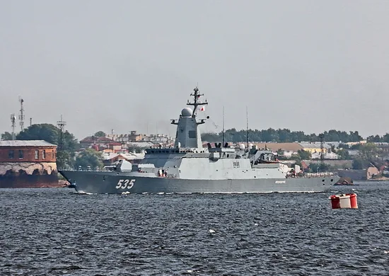
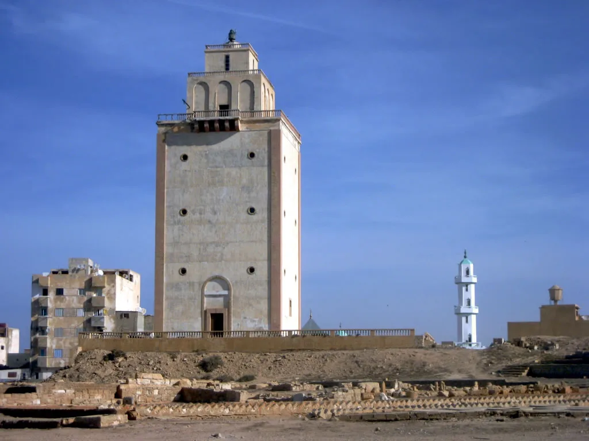

북아프리카 리비아 동부의 항구도시 벵가지에 정박해 있던 러시아 해군 코르벳함이 드론 공격을 받은 뒤 침몰한 것으로 파악됐다. 22일 공개된 위성사진을 보면 선체 대부분이 뒤집힌 채 물에 잠겼고 함수 부분만 수면 위로 드러나 있었다. 위성영상 업체 밴터(Vantor)는 해당 함정을 러시아 해군 코르벳 '메르쿠리'로 식별했다. 지중해에서 러시아 군함이 공격으로 가라앉은 것으로 알려진 사례여서 국제사회의 이목이 쏠리고 있다.
공격은 이날 새벽 이뤄진 것으로 전해졌다. 현지 주민들은 드론 세 대가 함정을 향해 날아드는 장면을 목격했다고 증언했고, 일부 외신은 해상 드론에 의한 공격이었다고 보도했다. 함정은 해군기지와 가까운 벵가지 민간 항구 안쪽에 계류돼 있었던 것으로 알려졌다. 현지 소식통은 리비아인과 러시아인 사망자가 발생했다고 전했지만, 정확한 인명 피해 규모는 아직 확인되지 않았다.

공격 주체는 드러나지 않았다. 러시아 정부는 즉각적인 반응을 내놓지 않았고, 공격을 자처한 세력도 없었다. 외신들은 흑해를 넘어 지중해까지 러시아 관련 선박을 겨냥해 온 정황이 있는 우크라이나를 유력한 배후로 거론하고 있다. 다만 우크라이나 측의 공식 확인은 없는 상태이며, 일부 매체는 그간 지중해에서 벌어진 러시아 연계 선박 공격 사례들을 근거로 들어 가능성을 제기하는 수준에 그치고 있다.
현지 당국의 설명은 결이 다르다. 벵가지 지방 당국과 민방위는 이날 아침 해군기지에서 폭발과 화재가 있었다는 사실은 인정했지만, 사고가 러시아 군함이 아니라 탄약고에서 일어났다고 주장했다. 리비아 동부 행정부는 러시아와 함께 공동 조사에 착수했다고 밝혔다. 위성사진과 현지 발표 사이에 간극이 있는 만큼, 정확한 경위는 조사 결과가 나와야 가려질 전망이다. 조사에 러시아가 직접 참여하는 만큼 결과가 어느 정도까지 공개될지도 변수로 꼽힌다.
같은 날 벵가지 앞바다의 긴장은 밤까지 이어졌다. 저녁에는 해상 드론이 인근 해역의 상업 선박을 타격했다는 보도가 나왔고, 리비아 해·공군이 벵가지 연안에서 20척이 넘는 드론 보트를 요격했다는 소식도 전해졌다. 하루 사이에 군함과 민간 선박이 잇따라 표적이 되면서 지중해 남부 해상 교통의 안전에 대한 우려도 함께 커지고 있다.

이번 사건은 우크라이나 전쟁의 해상 전선이 흑해 밖으로 넓어지고 있음을 보여 주는 사례로 해석된다. 러시아는 리비아 동부 세력과 관계를 이어 오며 지중해에서 군사적 거점을 확보하려 해 왔다. 그런 상황에서 정박 중인 군함이 무인기에 피해를 입었다면, 원거리 기지의 방어 체계에 허점이 드러났다는 의미가 될 수 있다. 저렴한 드론이 고가의 함정을 위협하는 비대칭 전력의 위력이 다시 확인됐다는 평가도 나온다.
향후 관심은 러시아의 공식 대응과 공동 조사 결과에 모인다. 러시아가 피해를 인정하고 보복이나 경계 강화에 나설지, 리비아 동부 당국이 탄약고 사고라는 기존 입장을 유지할지가 관건이다. 사건 경위가 명확해지기 전까지는 사상자 수와 공격 수단 등 세부 사항이 바뀔 수 있어, 추가 발표를 지켜볼 필요가 있다. 이번 사건이 진행 중인 전쟁 관련 외교 논의에 어떤 영향을 줄지도 주목된다.